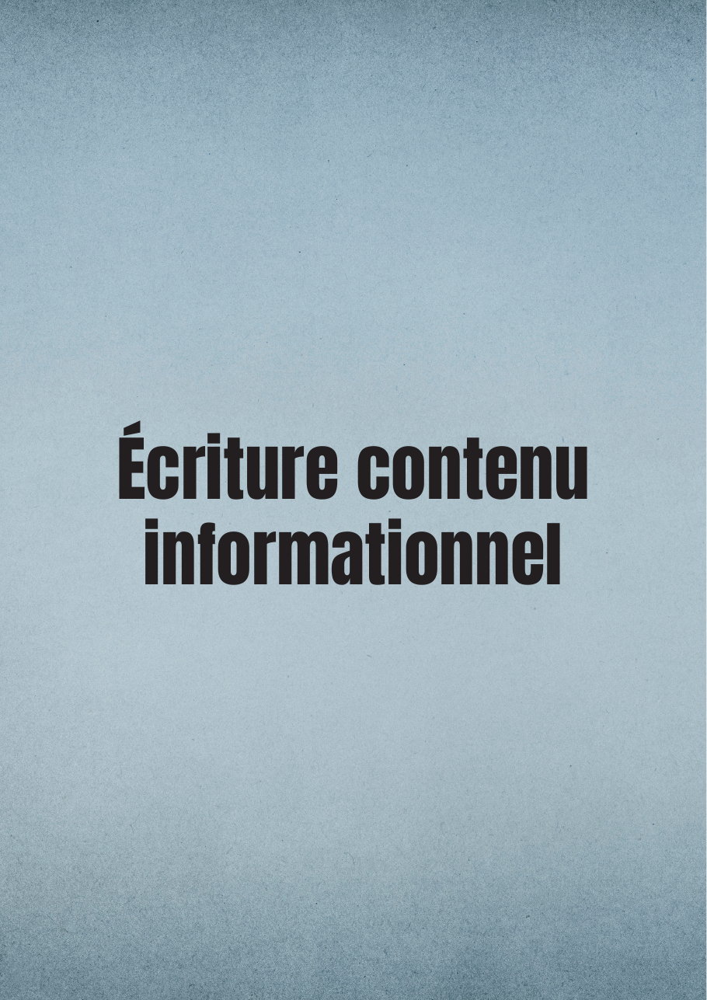
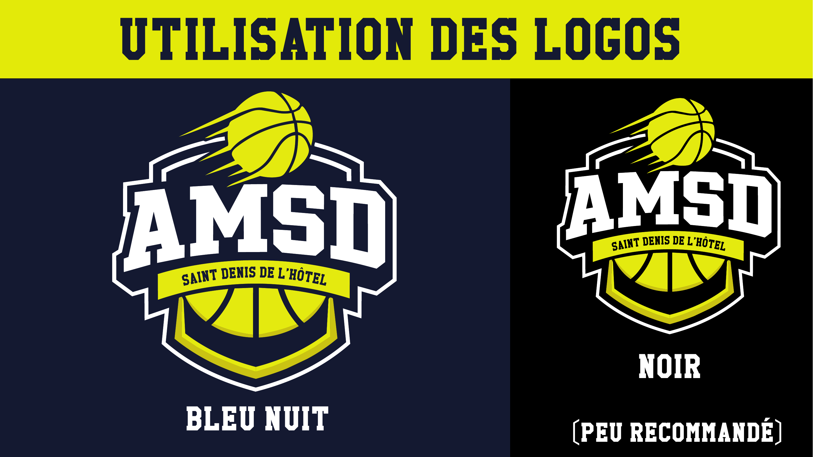

Faire,
puis comprendre
ce qu'on fait.
Six projets, six façons de répondre à un problème par l'image, le code et l'écriture.
Je m'appelle Thylan. Pendant ces deux années de BUT MMI en Création Numérique, j'ai surtout appris une chose : une compétence ne se déclare pas, elle se montre. Auditer un site, intégrer une interface, composer une affiche, écrire un script ou penser sa présence en ligne — ce sont des gestes différents, mais c'est toujours le même réflexe : cadrer une intention, faire des choix, puis prendre du recul.
Ce portfolio n'est pas un catalogue. C'est un parcours : chaque projet raconte un contexte, une mission, ma manière de m'y prendre, et ce que j'en retiens — y compris ce qu'il me reste à creuser. Mon terrain de jeu, c'est le key art et la direction artistique, pour le cinéma comme pour le sport, sans jamais lâcher la technique qu'il y a derrière.
Bonne lecture.
✸ Les projets
Audit SEO — Logitech G
Audit complet d'un site e-commerce gaming : indexation, contenu, technique et préconisations.

Site Dune
Reproduction en code d'un site one-page : HTML, CSS, JS et carte interactive Leaflet.

Affiche OLB
Key art sportif pour Orléans Loiret Basket — composition et direction artistique sous Photoshop.

Lead magnet — l'affiche de film
Un guide offert pour mon personal branding LinkedIn : contenu, mise en page et acquisition.

Écriture — F1 Insight
Stratégie de communication et script voix off d'une vidéo de vulgarisation sur la F1.

Stage — Identité AMSD
Identité visuelle d'un club de basket en stage : système de logos, déclinaisons saisonnières, maillots et charte.